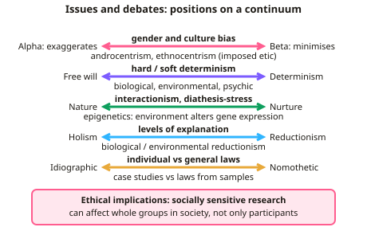

A-level Psychology Year 13 · Topic 3
Issues, debates and options
This topic pulls together the issues and debates you need for every A-level paper, plus key options and statistics.
We will revise bias, free will, nature and nurture, holism and ethics, then look at schizophrenia and relationships.
Finally we practise choosing, calculating and interpreting inferential tests, and deciding whether results are significant.
- 20 subtopics
- 700 questions
- Free: 3.1 notes and 6 questions
In this topic
- 3.1Issues and debatesFree below · 15 questions
- 3.2SchizophreniaOpen in Full Marks · 17 questions
- 3.3RelationshipsOpen in Full Marks · 13 questions
- 3.4Inferential statistics and scienceOpen in Full Marks · 48 questions
- 3.5Choosing and justifying statistical tests (level of data, design, parametric assumptions)Open in Full Marks · 76 questions
- 3.6Calculating non-parametric tests: sign test, Wilcoxon, Mann-Whitney, chi-square, Spearman's rhoOpen in Full Marks · 68 questions
- 3.7Calculating parametric tests: related and unrelated t-tests and Pearson's rOpen in Full Marks · 24 questions
- 3.8Significance levels, critical values, one- and two-tailed tests and Type I/II errorsOpen in Full Marks · 63 questions
- 3.9Gender bias in psychologyOpen in Full Marks · 23 questions
- 3.10Culture bias in psychologyOpen in Full Marks · 25 questions
- 3.11Free will and determinismOpen in Full Marks · 24 questions
- 3.12The nature–nurture debateOpen in Full Marks · 28 questions
- 3.13Holism and reductionism; idiographic and nomothetic approachesOpen in Full Marks · 26 questions
- 3.14Ethical implications of research: socially sensitive researchOpen in Full Marks · 23 questions
- 3.15Evolutionary explanations for partner preferencesOpen in Full Marks · 33 questions
- 3.16Factors affecting attraction: self-disclosure, physical attractiveness and filter theoryOpen in Full Marks · 23 questions
- 3.17Theories of romantic relationships: social exchange, equity and Rusbult's investment modelOpen in Full Marks · 66 questions
- 3.18Duck's phase model of relationship breakdownOpen in Full Marks · 66 questions
- 3.19Virtual relationships in social mediaOpen in Full Marks · 19 questions
- 3.20Parasocial relationshipsOpen in Full Marks · 20 questions
3.1 · Free notes
Issues and debates

Key points
- Gender and culture bias: alpha bias exaggerates differences, beta bias minimises them; androcentrism and ethnocentrism (e.g. imposed etic) limit generalisability.
- Free will and determinism: hard determinism, soft determinism, and biological, environmental and psychic determinism.
- Nature-nurture: the interactionist approach, diathesis-stress model and epigenetics.
- Holism and reductionism: levels of explanation, biological reductionism and environmental reductionism.
- Idiographic approaches study individuals in depth; nomothetic approaches seek general laws.
- Ethical implications and socially sensitive research: findings can affect groups in society beyond the participants themselves.
In more detail
- Worked gender bias example: Kohlberg's theory of moral development was based on interviews with American boys only, then applied to everyone, which is an example of beta bias and androcentrism.
- Worked determinism example: the dopamine hypothesis of schizophrenia is biologically deterministic; a soft-determinist view says genes create a vulnerability, but stress and choices still matter.
- Socially sensitive research: Sieber and Stanley (1988) warned researchers to think about the implications of their findings, how they might be used (e.g. in policy) and whether the research is valid, for example in research on genetic causes of crime.
- Cultural relativism example: hearing the voices of ancestors may be seen as normal in some cultures, but as a symptom of psychosis under UK diagnostic systems.
- 16-mark technique: pick one debate, use a specific topic (e.g. aggression or schizophrenia) as the example, give both sides, and finish with a reasoned judgement, often interactionism.
Practice
Issues and debates: 6 questions
Pick an answer to check it, or open the answer for the explanation.
1. What is a nomothetic approach?
- Studying individuals in depth
- Seeking general laws that apply to all people
- Using only case studies
- Rejecting measurement
Show answer
B: Seeking general laws that apply to all people. Idiographic research focuses on the individual instead.
2. What is alpha bias?
- Minimising differences between genders
- Exaggerating differences between genders or cultures
- Ignoring culture
- Using only male participants
Show answer
B: Exaggerating differences between genders or cultures. Beta bias minimises or ignores real differences.
3. What does the diathesis-stress model propose?
- Only genes cause disorder
- A genetic vulnerability interacts with environmental stress to trigger a disorder
- Only environment matters
- Disorders are random
Show answer
B: A genetic vulnerability interacts with environmental stress to trigger a disorder. It is an interactionist position in the nature-nurture debate.
4. What is biological reductionism?
- Explaining behaviour at multiple levels
- Explaining complex behaviour purely in terms of biological factors such as genes or neurotransmitters
- Avoiding biology
- A holistic view
Show answer
B: Explaining complex behaviour purely in terms of biological factors such as genes or neurotransmitters. It can be powerful but may oversimplify.
5. What is socially sensitive research?
- Research with no ethical issues
- Research with potential consequences for participants or the groups they represent
- Research using only questionnaires
- Research that cannot be published
Show answer
B: Research with potential consequences for participants or the groups they represent. Researchers must weigh benefits against possible harm.
6. What is meant by cultural relativism in psychology?
- All cultures are identical
- Behaviour should be judged within the context of the culture in which it occurs
- Only Western behaviour is normal
- Culture has no effect on behaviour
Show answer
B: Behaviour should be judged within the context of the culture in which it occurs. Failing to consider this can lead to imposed etic and biased conclusions.
Keep going in Full Marks
Full Marks has 15 questions on Issues and debates (9 more than here), set out in practice levels. You also get notes and 3D models for all 20 subtopics of Issues, debates and options, plus games, timed exams and past papers.
On your exam board
- AQATopic 1: Issues and debates in psychology, Topic 2: Relationships, Topic 5: Schizophrenia, Topic 11: Research methods: inferential statistics
- OCRTopic 1: Issues in mental health, Topic 6: Research methods and skills, Topic 7: Issues and debates
- EdexcelTopic 5: Clinical psychology, Topic 7.1: Psychological skills: methods and data, Topic 7.2: Psychological skills: issues and debates
- CambridgeTopic 11: Research methods (A Level), Topic 12: Issues and debates (A Level)